下の「困ったとき」も見てください。
まずはここだけ
3分🚀経費はこの 3 つだけでおしまい
レシートを撮るだけで、金額・日付・お店・勘定科目が自動で入ります。月末にボタンを押すと、提出できる精算書（PDF）ができます。
アプリを入れる
最初に 1 回📱iPhone に入れる
App Store からではなく、Safari（サファリ）でページを開いて「ホーム画面に追加」します。お金はかかりません。
- Safari で開く会社から教えてもらったアドレス（例:
https://…/keihi/）を Safari で開きます。LINE やメールのリンクから開いたときは、右下の「Safari で開く」を押してください。 - 共有ボタンを押す画面の下（iPad は右上）にある □↑（四角から矢印が出ているボタン）を押します。
- 「ホーム画面に追加」下にスクロールして ホーム画面に追加 →右上の 追加。
- ホーム画面のアイコンから開く緑のアイコン「ラク経費」ができます。これからは、このアイコンから開きます。
🤖Android に入れる
- Chrome で開く教えてもらったアドレスを Chrome で開きます。
- 「インストール」を押す画面の下にホーム画面に追加やインストールが出たら押します。出ないときは右上の ⋮ →アプリをインストール（またはホーム画面に追加）。
- アイコンから開くホーム画面かアプリ一覧に「ラク経費」ができます。
💻パソコンに入れる
パソコン版は、たくさんのレシートの確認・精算書・帳簿・決算書に向いています。Chrome か Edge を使ってください。
- パソコン版を開くアドレスの最後に
pc/を付けたページ（例:https://…/keihi/pc/）を Chrome か Edge で開きます。 - インストールアドレスバーの右にある ⊕（インストール）を押します。Edge は…→アプリ→このサイトをアプリとしてインストール。
- デスクトップやスタートメニューから開く普通のソフトのように開けます。画像や PDF を右クリック→このアプリで開くでも取り込めます。
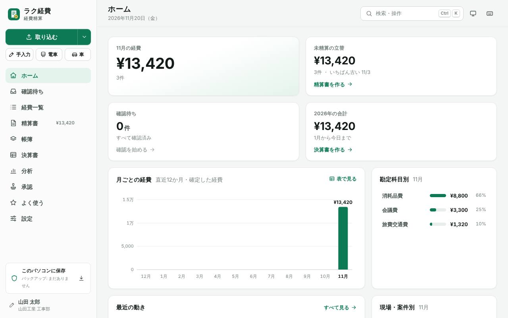
⚙️最初の設定（1 分）
- 名前と振込先を入れる設定を開き、会社名・所属・氏名（あれば社員番号）を入れます。精算書の上にのります。精算の振込先（銀行・支店・口座番号・名義カナ）も入れておくと、総務に提出するときに一緒に届きます。
- 読み取り方を選ぶふつうは「端末内で読む（無料）」のままで大丈夫です。手書きやくしゃくしゃのレシートが多い人は、会社の指示があれば「AI で読む」にします（API キーが必要・1 枚数円）。
- 会社のルールを取り込む総務から「会社の経費ルール」ファイルが届いたら、設定→ファイルを取り込むで選びます。入力のときに「目的を書いてください」などと知らせてくれます。
- Google ドライブにつなぐ（おすすめ）Google ドライブにつなぐを押して、自分の Google アカウントでログインします。自分のスマホとパソコンのデータが自動でそろい、スマホをなくしても消えません。くわしく
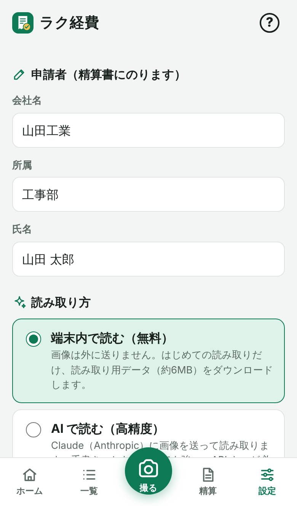
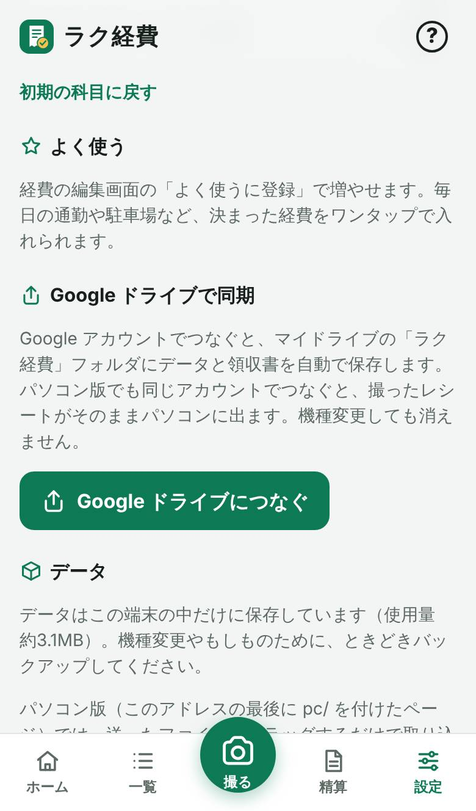
経費を入れる
使う人📷レシート・領収書を撮る
- 「撮る」を押す画面の下の真ん中の、緑の撮る（またはホームのレシートを撮る）を押します。
- レシートを撮る暗い色の机などに置いて、レシート全体が入るように撮ります。少し斜めでも、まわりが写っていても大丈夫（自動で切り抜きます）。
- 黄色の欄だけ確かめる金額・日付・お店・勘定科目が自動で入ります。黄色になっている欄は自信がない所なので、そこだけ見て直します。
- 「保存」続けて撮るときは保存して次へ。
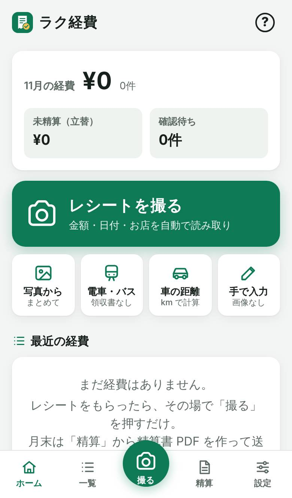
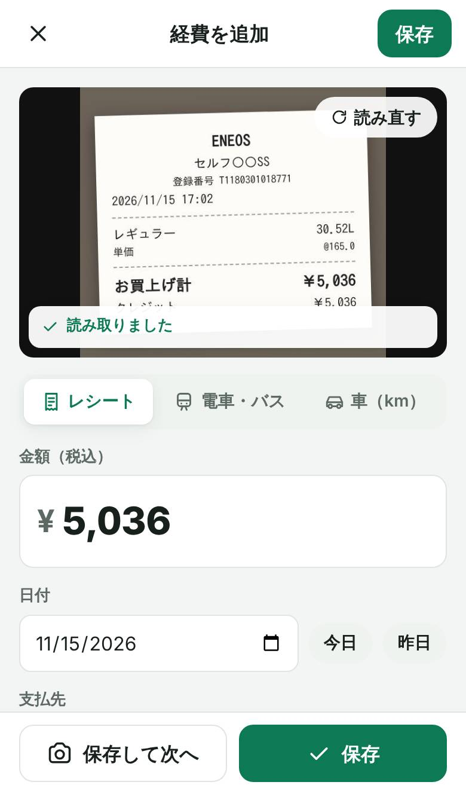
🗂️たまったレシートをまとめて入れる
- 「写真から」で選ぶホームの写真からを押し、撮りためた写真を何枚でも選びます。
- 読み取りを待つ1 枚ずつ自動で読み取り、確認待ちに並びます。待っている間、ほかの操作をしても大丈夫です。
- まとめて確定金額・日付・科目がそろったものは○件をまとめて確定で一度に確定できます。気になるものだけ、押して開いて直します。
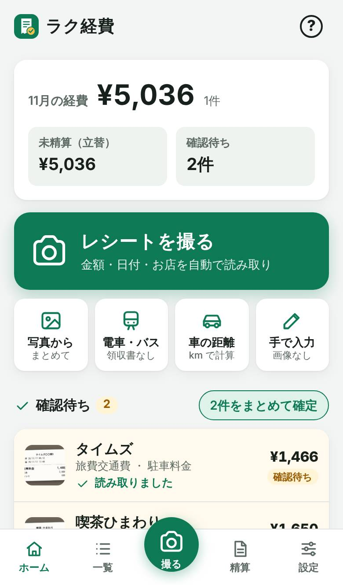
📄PDF やメールの領収書（ネットで買った物）
Amazon・モノタロウなどの領収書 PDF は、写真から（パソコンは取り込むかドラッグ）でそのまま入れられます。文字のある PDF は文字を直接読むので正確です。
パソコン版では、メールソフトでメールを .eml で保存してドラッグすると、添付の PDF・画像を取り込みます（本文だけの領収書メールもそのまま読みます）。
🚃電車・バス（領収書がない交通費）
- 「電車・バス」を押すホームの電車・バスを押します。
- 区間と運賃を入れるどこからどこまでと、片道の運賃を入れます。往復なら往復に印を付けると 2 倍になります。
- 目的・現場を入れて保存「○○邸 打合せ」のように、何のために行ったかを書きます。
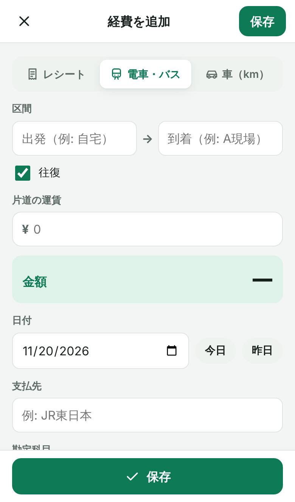
🚗自分の車で行った（距離で精算）
ホームの車の距離を押し、行き先と片道の km を入れます。km × 1km あたりの単価で金額を自動計算します（単価は会社の決まりに合わせて［設定 → 入力の初期値］で変えられます。初期値は 15 円）。
✏️レシートがない・なくした
ホームの手で入力で、金額・日付・支払先・内容を入れます。
⭐毎回同じ経費をワンタップで（よく使う）
- 一度ふつうに入れる例: 月極駐車場 15,000円、現場までの電車代 など。
- 「よく使うに登録」入力画面の下のよく使うに登録を押します。
- 次からはホームのボタンを押すだけ今日の日付で 1 件入ります。パソコン版の［よく使う］では「毎月○日に自動で登録」もできます。
📝入力する欄の意味
| 欄 | 何を入れる？ |
|---|---|
| 金額 | 税込の合計。レシートの「合計」「お買上げ計」の金額。 |
| 日付 | お金を払った日（レシートの日付）。 |
| 支払方法 | 現金・個人カード・電子マネーは立て替え（あとでお金が戻る）。会社カード・請求書払いは会社が払ったので、精算額に入りません。 |
| 支払先 | お店・会社の名前。 |
| 勘定科目 | 何に使ったお金かの分類。自動で選ばれます。迷ったら科目の早見表。 |
| 現場・案件 | どの現場・仕事のための経費か（例: A邸 新築工事）。前回の現場が最初から入っています。なければ空でも OK。 |
| 内容・目的 | 何を買った・何のため（例: 養生テープ・軍手 ／ ○○様と打合せ）。 |
| 人数・相手先 | 飲食（会議費・接待交際費）のときだけ。1 人 1 万円以下の飲食は、人数と相手を書くと交際費から外せます。 |
| 登録番号 | レシートの「T＋13 けたの数字」。自動で読みます。あると会社が消費税を差し引けます。 |
↩️直す・消す・元に戻す
- 直す: 一覧で経費を押して開き、直して保存。
- 消す: 開いて削除。すぐ下に出る元に戻すで取り消せます。
- 同じものを 2 回入れた？: 同じ日・同じ金額の経費があると「同じ経費があります」と黄色で知らせます。
- 精算済みのものを直すと、提出した精算書と合わなくなります。直す前に経理の人に相談してください。
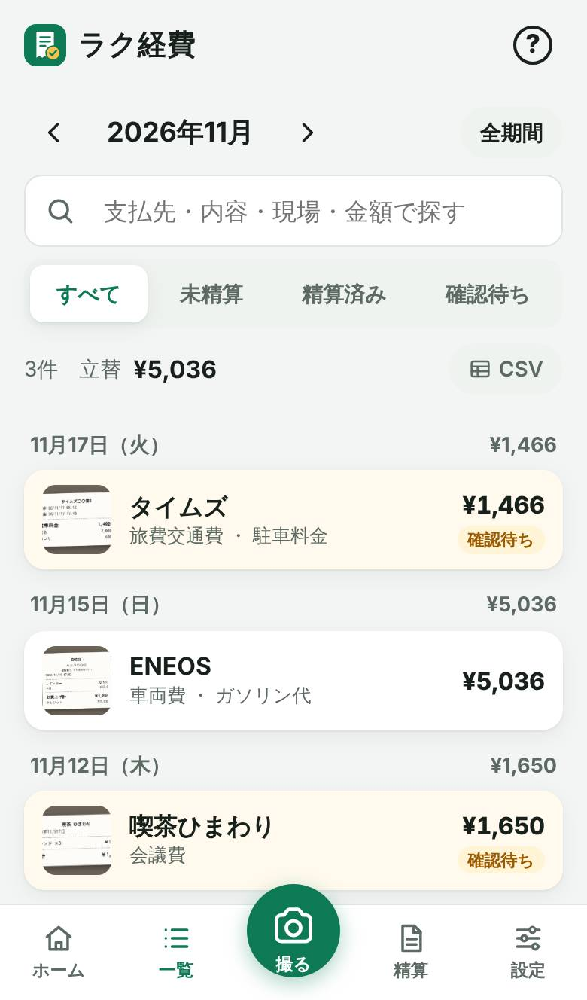
月末の精算
使う人🧾精算書を作って出す
- 「精算」を開く下の精算を押します。最初は「未精算すべて」が選ばれています（今月だけなら今月）。
- 金額を確かめる件数・立替合計・差引支給額（戻ってくるお金）が出ます。先にお金をもらっていた（仮払金）ときは、その金額を入れます。
- 「精算書 PDF を作る」明細・科目別の集計・領収書の台紙（1 ページに 6 枚）が 1 つの PDF になります。
- 「送る」LINE・メールなどで上司・経理に送ります。印刷もできます。
- 「精算済み」にする提出したら提出したので「精算済み」にする。次の月の精算書に入らなくなります。
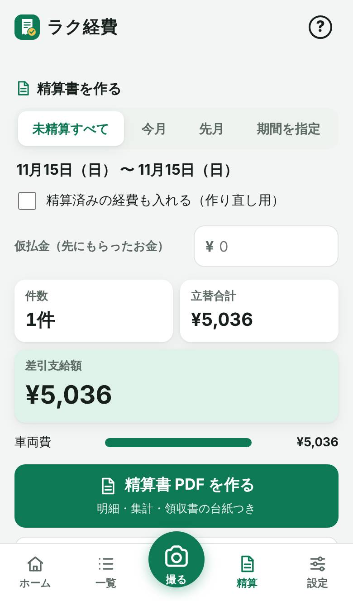
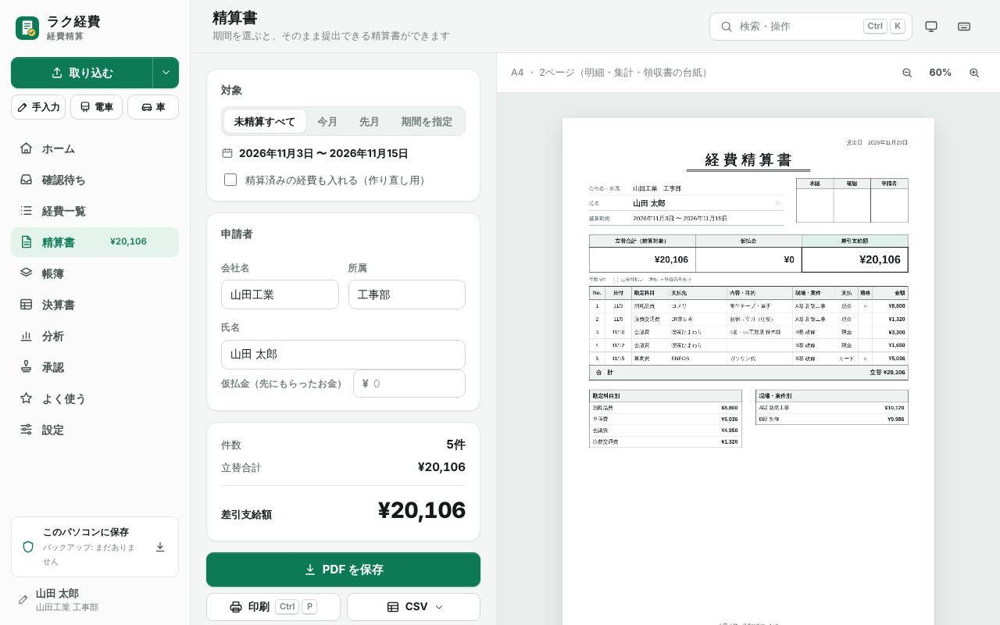
📮総務に提出する
- 精算書を作る精算→精算書 PDF を作る。
- 「精算済みにして総務に提出」提出ファイル（明細と領収書の画像・振込先が入っています）ができるので、LINE・メール・チャットで総務に送ります。会社のルールに合わない経費があるときは、先に知らせてくれます。
- 結果が返ってきたら取り込む総務から「精算の結果」ファイルが届いたら、設定→ファイルを取り込むで選びます。精算の「これまでの精算」に承認か差し戻しが出て、コメントは経費の画面に出ます。
- 差し戻されたら「これまでの精算」で戻す→経費を直す→もう一度精算書を作って提出します。
スマホとパソコン・データを守る
🔄スマホとパソコンを Google ドライブでそろえる
- スマホでつなぐ設定→Google ドライブにつなぐ→ Google アカウントを選んで許可。
- パソコンでも同じアカウントでつなぐパソコン版の［設定 → 同期・自動バックアップ］→Google ドライブにつなぐ。
- あとは自動スマホで撮ったレシートが、少しするとパソコンに出ます。直したこと・消したことも伝わります。
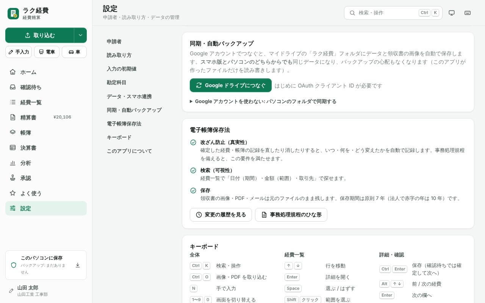
🛡️データを消さないために（バックアップ）
- Google ドライブ（自分のアカウント）につないでいれば、自動で保存され、14 日分の控えも残ります。スマホを替えても、新しいスマホでつなぐだけで戻ります。
- つないでいないときは、データはその端末の中だけです。設定→バックアップを保存で、月 1 回はファイルに保存してください。戻すときはバックアップから戻す。
- ブラウザの「履歴とデータを消す」「サイトのデータを消す」をすると、端末の中のデータは消えます。
経費のルールと科目
迷ったら🏷️勘定科目の早見表（何に使った？）
科目は自動で選ばれ、一度直すと次からそのお店はその科目になります。迷ったら、下から探してください（上の検索にも使えます）。
| こんなとき | 科目 |
|---|---|
| 電車・バス・タクシー・新幹線・飛行機・高速代・駐車場・コインパーキング・ホテル代 | 旅費交通費 |
| ガソリン・軽油・車の修理・オイル交換・タイヤ・車検・洗車・ETC カード代 | 車両費 |
| 文房具・電池・軍手・養生テープ・小さな工具（10 万円未満）・電球・洗剤・事務用品 | 消耗品費 |
| パソコン・機械・車など 10 万円以上の物 | 工具器具備品・車両運搬具（経理の人が固定資産として登録。くわしく） |
| 打合せのお茶・会議の弁当（社内・社外、ふつうの金額） | 会議費 |
| 取引先との飲み会・接待・お土産・お祝い・香典・お中元 | 接待交際費 |
| 携帯電話代・インターネット・切手・はがき・レターパック | 通信費 |
| 宅配便・運送料・バイク便 | 荷造運賃 |
| 本・新聞・雑誌・業界誌・有料のウェブ記事 | 新聞図書費 |
| 収入印紙・登記・証明書の発行手数料（役所）・自動車税・固定資産税 | 租税公課 |
| 振込手数料・各種手数料・カードの年会費 | 支払手数料 |
| 社員のための飲み物・お菓子・健康診断・慰労会（全員参加） | 福利厚生費 |
| 建物・機械・道具の修理代 | 修繕費 |
| 職人さん・一人親方・他社に頼んだ工事や作業 | 外注費（経理の人が［外注・源泉］で入れる） |
| 工事に使う材料・商品の仕入れ | 仕入高（会社の決まりによっては消耗品費） |
| 電気・ガス・水道 | 水道光熱費 |
| 家賃・事務所・資材置き場・月極駐車場（ずっと借りている所） | 地代家賃 |
| どれにも当てはまらない・たまにしかない少額のもの | 雑費（多用しない。内容をくわしく書く） |
📏経費のルール（これだけは守る）
- 仕事のためのお金だけ。私用の買い物が混ざったレシートは、仕事の分だけの金額にして、内容に「私用分を除く」と書きます。
- 領収書の宛名は会社名（個人事業主なら屋号か名前）。分からなければ「上様」より会社名を書いてもらいます。
- 飲食は人数と相手を書きます（1 人 1 万円以下なら交際費から外せます）。
- 会社カードで払った物も、記録と領収書のために入れます（精算額には入りません）。
- 紙の領収書は、会社の決まりに従って保管します（スキャン後の扱いは経理に確認）。電子でもらった領収書（PDF・メール）は、データのまま残します。
- 保存期間は原則 7 年（会社が赤字の年は 10 年）。
🔢インボイス（登録番号）って？
レシートに「T＋13 けたの数字」（登録番号）があると、会社は払った消費税を差し引けます。アプリが自動で読み取り、数字が正しいかもチェックします（緑の ✓）。
- 番号がないお店でも、経費として入れて大丈夫です（会社が差し引ける消費税が少し減るだけ）。
- 電車・バス代（3 万円未満）と車の距離精算は、番号がなくても大丈夫な扱いです。
- 番号の横の国税庁の公表サイトで確認で、本当に登録されているか見られます。
パソコン版・経理の人向け
経理の人⌨️パソコンでたくさん確認する
- 取り込む画像・PDF を画面にドラッグ（フォルダごとも可）。スマホから同期されたものも並びます。
- 左から順に確かめる真ん中に領収書（ホイールで拡大）、右に入力欄。Ctrl+Enter で確定して次へ。
- そろったものは「まとめて確定」
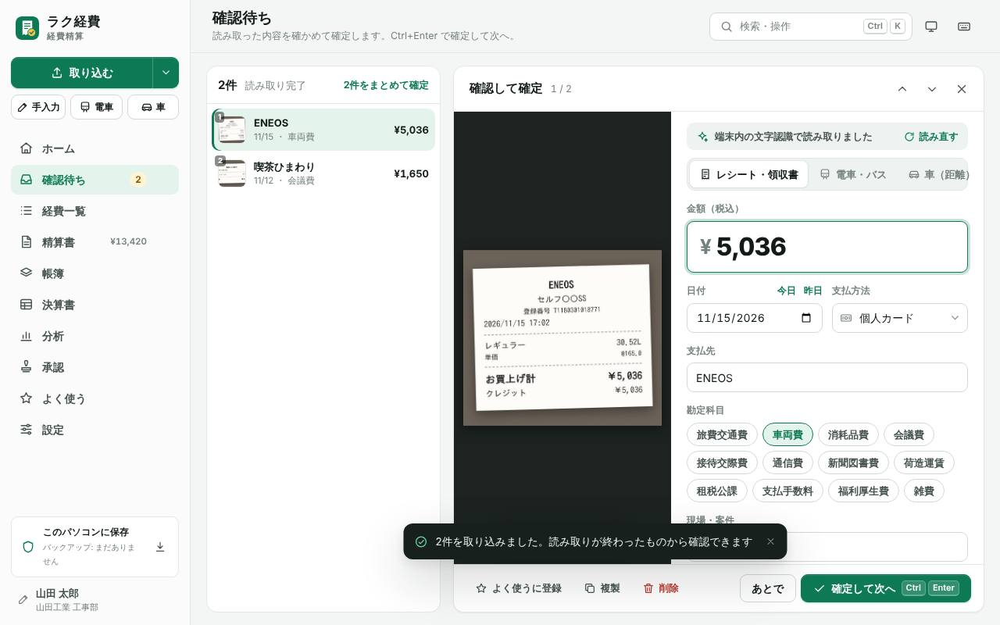
| キー | できること |
|---|---|
| Ctrl+K | なんでも検索（経費を金額で探す・画面を移る・操作） |
| 1〜9・0 | 画面の切り替え（ホーム・確認待ち・一覧・精算書・帳簿・決算書・分析・承認・よく使う・設定） |
| N | 手で入力 |
| ↑↓ Enter Space | 一覧で移動・開く・選ぶ |
| ? | キーボード操作の一覧 |
🔍一覧で探す・まとめて直す・Excel に出す
- 月・年・期間、状態、科目、現場、支払方法、金額の範囲で絞り込めます。上の検索は支払先・内容・金額で探せます。
- チェックを付けて（Shift で範囲）科目・現場・支払方法をまとめて変更。元に戻すもできます。
- 書き出すで CSV（Excel でそのまま開けます）。
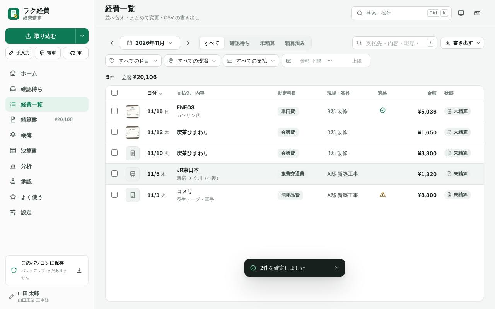
📒帳簿（売上・請求書・入金）
- はじめに［帳簿の設定］個人事業主か法人、決算月、期首残高（帳簿を始める日の預金・現金など）を 1 回だけ入れます。
- 請求書を作る［帳簿 → 請求書］で品目と金額を入れると、インボイスの形の請求書 PDF ができ、売上（売掛金）にもなります。
- 入金を記録入金されたら入金。銀行の明細を取り込むと自動で消し込みます（振込手数料を引かれた入金も）。
- それ以外のお金の動き［振替伝票］で。「生活費を引き出した」のように文章で入れると、借方・貸方を考えてくれます。
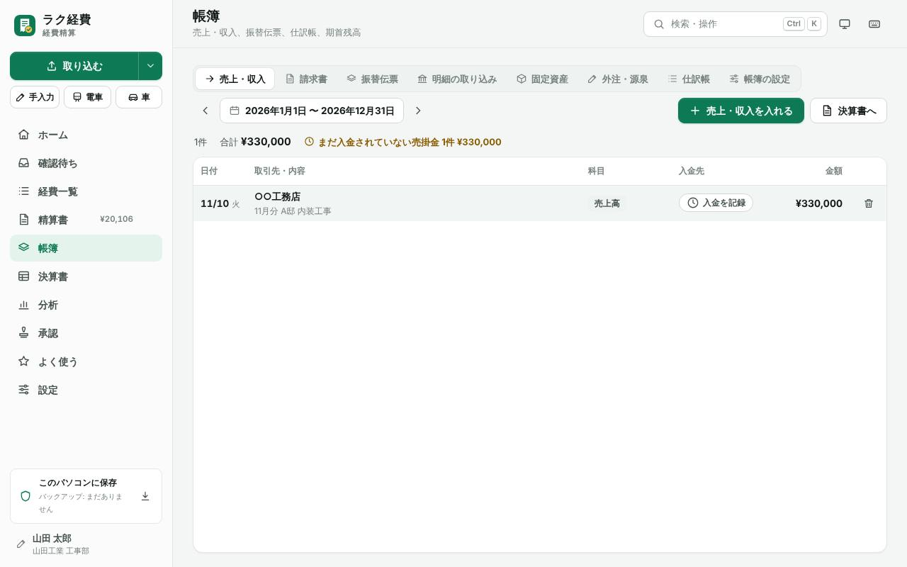
🏦銀行・カードの明細を取り込む
- CSV をダウンロードネットバンキング・カード会社のサイトから、明細を CSV でダウンロードします。
- 画面にドラッグ［帳簿 → 明細の取り込み］か、どの画面でも CSV をドラッグ。
- 振り分けを確かめて「取り込む」経費・売上・請求の入金・振替を自動で提案します。レシートで登録済みのもの・前に取り込んだ行は飛ばします。
📊決算書（損益計算書・貸借対照表）をボタンひとつで
［決算書］の損益計算書・貸借対照表を作るで、A4 の PDF ができます（月別推移・消費税・青色申告決算書の内訳ページつき）。今期・前期・期間を選べます。
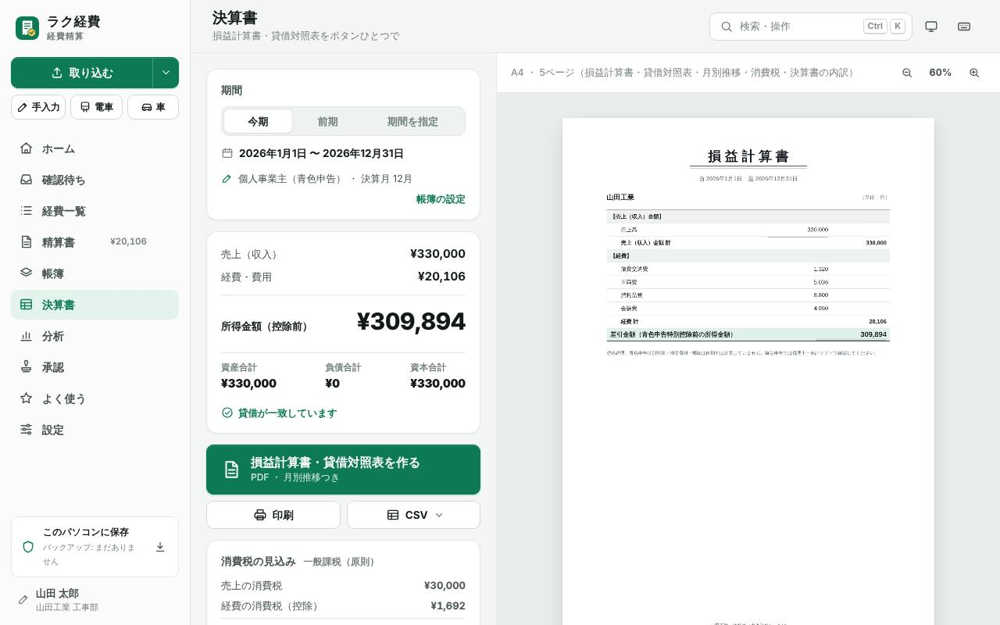
📤会計ソフト・税理士に渡す
［決算書 → CSV］から、期間の仕訳を書き出せます。
| ソフト | 選ぶもの | ソフト側での取り込み |
|---|---|---|
| 弥生会計・やよいの青色申告 | 弥生会計 形式 | ［ファイル → インポート］ |
| マネーフォワード クラウド | マネーフォワード 形式 | ［仕訳帳 → インポート → 仕訳帳］ |
| freee 会計 | freee 用（弥生形式） | ［取引 → 振替伝票 → インポート → 弥生会計仕訳インポート］ |
| 税理士さん（Excel） | 仕訳帳 CSV・試算表 CSV | Excel で開く |
勘定科目の名前が会計ソフトと違うときは、取り込みの画面で対応づけを聞かれます。
🧮固定資産・外注費（源泉徴収）
- 10 万円以上の物（車・パソコン・機械）は［帳簿 → 固定資産］で登録すると、毎年の減価償却を自動で計算します（定額法・定率法・30 万円未満を一度に経費にする特例は 1 年 300 万円まで）。
- 職人さん・一人親方への支払いは［帳簿 → 外注・源泉］で。源泉徴収が必要な支払い（デザイン料・原稿料・士業の報酬など）は、10.21% を自動で計算します。支払調書用の一覧も CSV で出せます。
💴消費税・家事按分
- ［帳簿の設定 → 消費税］で「課税事業者」にすると、決算書の画面に納める消費税の見込みが出ます（一般・簡易・2 割特例・3 割特例のくらべつき）。
- 登録番号のない仕入れは、経過措置の割合だけ差し引きます（2026 年 10 月から 70%）。
- 個人事業主で家と事務所が同じ・車を私用にも使うときは、［帳簿の設定 → 家事按分］で事業の割合を決めると、期末に自動で振り分けます。
🗄️電子帳簿保存法への対応
- 確定した経費・帳簿を直したり消したりすると、いつ・何を・どう変えたかを自動で記録します（経費の画面の変更の履歴、［設定 → 変更の履歴を見る］）。
- 経費一覧で 日付・金額の範囲・取引先で検索できます。
- ［設定 → 事務処理規程のひな形］で、規程の下書きを保存できます。空欄を埋めて社内に備えてください。
導入手順（管理する人）
最初に 1 回・30 分🧭導入の全体の流れ
🌐1. アプリを公開する（GitHub Pages）
- リポジトリを開くGitHub でこのアプリのリポジトリを開きます。
- Settings → Pages上のSettings→左のPages。
- 公開する枝を選ぶ「Build and deployment」の Source を Deploy from a branch、Branch を公開したい枝（例:
main）と/ (root)にしてSave。 - アドレスを確かめる数分すると上に
https://（ユーザー名）.github.io/（リポジトリ名）/が出ます。ラク経費はその後ろにkeihi/、パソコン版はkeihi/pc/。
🔑2. Google ドライブ同期の準備（OAuth クライアント ID）
- Google Cloud でプロジェクトを作るconsole.cloud.google.com →新しいプロジェクト。
- Google Drive API を有効にする［API とサービス → ライブラリ］で「Google Drive API」→有効にする。
- 同意画面を作る［OAuth 同意画面］（または［Google Auth Platform］）でアプリ名・メールを入れ、対象は外部。テストユーザーに、使う Google アカウントを追加します（100 アカウントまで）。
- クライアント ID を作る［認証情報 → 認証情報を作成 → OAuth クライアント ID］、種類はウェブ アプリケーション。承認済みの JavaScript 生成元に
https://（ユーザー名）.github.ioを入れて作成。 - config.js に書くできた ID（
…apps.googleusercontent.com）を、リポジトリのconfig.jsのGOOGLE_CLIENT_ID = ''の中に貼り付けて公開します。
📣3. みんなに配る
次の文をそのまま社内チャット・メールに貼って送れます（アドレスは書き換えてください）。
1. スマホでこのアドレスを開いて「ホーム画面に追加」してください: https://（公開したアドレス）/keihi/
2. ［設定］で名前・社員番号・精算の振込先を入れる。添付の「会社の経費ルール」ファイルを［設定 → ファイルを取り込む］で選ぶ
3. （おすすめ）［設定 → Google ドライブにつなぐ］で自分の Google アカウントでログイン（スマホを替えても消えません）
4. レシートは「撮る」で撮るだけ。月末は［精算］→［精算書 PDF を作る］→［精算済みにして総務に提出］で、毎月 ○ 日までに総務に送ってください
わからないことは、アプリの右上の「？」から使い方ガイドを開いて検索できます。
☑️導入後の動作確認チェック表
- スマホでアドレスを開き、ホーム画面に追加できた
- レシートを撮って、金額・日付が自動で入った
- スマホで Google ドライブにつながった（設定に「同期しています」）
- パソコン版でも同じアカウントでつながり、スマホのレシートが出てきた
- 精算書 PDF を作って、開けた・送れた
- パソコン版で決算書 PDF ができた（経理で使う場合）
- バックアップのファイルを 1 回保存してみた
総務の人向け（全員の精算を集めて払う）
パソコン版🗓️総務の毎月の流れ
📥受け取り箱（全員の精算を見る）
- まとめて取り込むメール・チャットで届いた「精算の提出_○○.json」を、何個でもまとめて画面にドラッグ（または［承認・総務］→提出・結果ファイルを取り込む）。同じファイルを 2 回入れても 1 件のままです。
- 一覧で見る月・状態（未決・承認・差し戻し・支払済み）・社員で絞り込めます。上には未決の件数、承認済みで未払いの金額、支払済みの金額、未提出の人が出ます。
- 気になるものを開くルールは会社のルールに合わない経費、二重の疑いはほかの社員の提出にも同じ日・金額・支払先の経費があるものです。開くと領収書の画像と理由が並びます。
- 承認・差し戻し経費ごとにコメントを書いて承認するか差し戻す。できた「精算の結果」ファイルを社員に返します（承認だけなら返さなくても大丈夫です）。
- 全員の経費を探す: 上の検索に支払先・金額・日付を入れると、全員の提出の中から探せます（電子帳簿保存法の検索にも）。
- 明細 CSV: 全員分の明細を Excel で開ける CSV に出せます（社員・社員番号・状態・支払日つき）。
💸振込データを作る（全銀形式）
- 振込元を 1 回だけ入れる［承認・総務 → 振込］→振込元を入れる。銀行から伝えられた委託者コード（10 けた）・委託者名（カナ）と、振り込むときに使う会社の口座を入れます。
- 振り込む人を確かめる承認済みでまだ払っていない精算が、社員ごとにまとまって並びます。振込先がない人は入れるから（社員が自分の設定で入れていれば、提出ファイルで自動で届きます）。
- 振込データを作る振込日を選んで振込データ（全銀形式）。できた「総合振込_日付.txt」を、ネットバンキングの総合振込 → ファイルの取り込みで読み込みます。手で入れる銀行なら振込一覧（CSV）を見ながら入れます。
- 支払済みにする振込の手続きが終わったら支払済みにする。間違えたら「これまでの振込」で取り消せます。
👥社員と振込先（名簿）
- 提出ファイルが届くと、名前・所属・社員番号・振込先が自動で名簿に入ります。先に全員を社員を足すで入れておくと、「未提出」の人が分かります。
- 総務が振込先を直すと、その人の振込先は提出ファイルで上書きされなくなります（総務が固定）。
- 退職・休職の人は「在籍」のチェックを外すと、未提出に数えません。
- 銀行名・支店名・名義は全角カナで入れて大丈夫です（振込データでは自動で半角カナになります）。漢字は使えません。
📜会社の経費ルールを決めて配る
- ルールを決める［承認・総務 → 会社のルール］で、提出の締切（毎月○日）、必ず書くこと（目的・現場・飲食の人数と相手）、領収書の画像、飲食の 1 人あたりの上限、科目ごとの 1 件の上限、使ってよい科目を決めます。
- 配るファイルを作る配るファイルを作るでできた「会社の経費ルール_○○.json」を、全員にメール・チャットで送ります。
- 社員が取り込む社員はスマホの［設定 → ファイルを取り込む］（パソコンはドラッグ）で選ぶだけ。入力の画面でルールに合わないところを赤・黄色で知らせ、提出するときにも確認します。締切が近づくとホームに出ます。
困ったとき
よくある質問🆘よくある質問
金額や日付が違う・読み取れない
読み取りが遅い・終わらない
精算書に経費が入っていない
間違えて「精算済み」にしてしまった
「つなぎ直す」が何度も出る
スマホで入れた経費がパソコンに出ない
スマホを替えた・なくした
データが消えた・空になった
カードで払ったときは？
先にお金をもらっていた（仮払金）
レシートが長くて 1 枚に写らない
精算書を紙で出したい
CSV を Excel で開くと文字化けする
電波がない現場でも使える？
お金はかかる？
社員みんなで使うときは？（名前が混ざった）
振込データを銀行が読み込んでくれない
「ポップアップがブロックされました」と出る
📖言葉の意味
| 言葉 | 意味 |
|---|---|
| 立替（たてかえ） | 会社の経費を、自分のお金で先に払うこと。あとで精算して返してもらいます。 |
| 精算（せいさん） | 立て替えたお金を会社に請求して、返してもらうこと。 |
| 仮払金（かりばらいきん） | 出張などの前に、先に会社からもらっておくお金。 |
| 差引支給額 | 立替合計 − 仮払金。会社から戻ってくる金額（マイナスなら返す金額）。 |
| 確認待ち | 読み取りが終わって、まだ人が確かめていない経費。 |
| 確定 | 内容を確かめて「これで OK」にすること。確定したものだけが精算書に入ります。 |
| 勘定科目 | お金の使いみちの分類（旅費交通費・消耗品費など）。 |
| 登録番号（インボイス） | レシートの「T＋13 けた」。消費税を差し引くために使います。 |
ラク経費 使い方ガイド ・ このページは電波がなくても見られます（アプリを入れた端末）